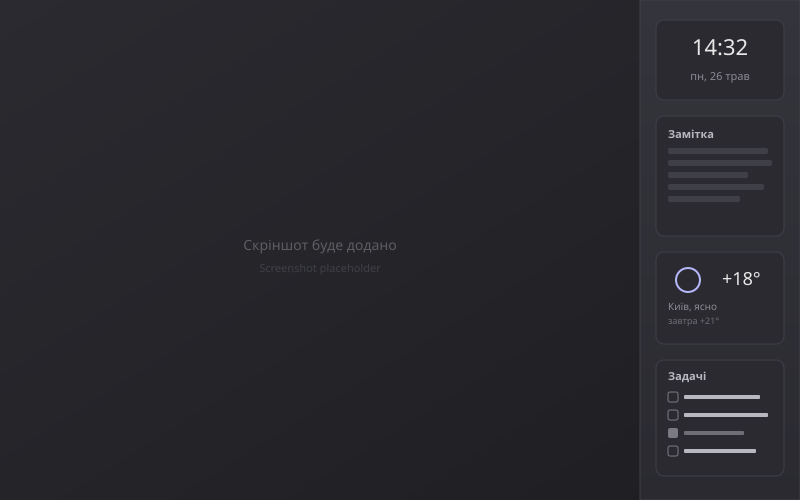
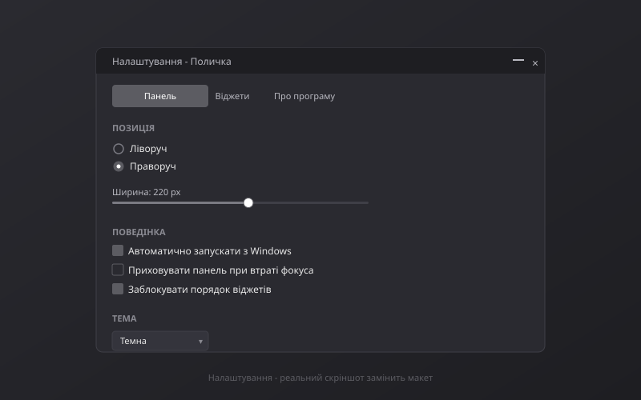
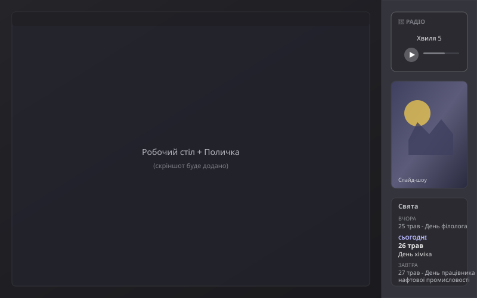

Поличка
Бічна док-панель з віджетами для робочого столу Windows. Безкоштовно, відкритий код, без реклами.
Що це
Поличка - це бічна панель (док-бар), яка живе на правому або лівому краю екрана Windows і тримає набір зручних мініатюрних віджетів.
Панель резервує собі місце на екрані через Windows AppBar API. Це значить: коли ти розгортаєш будь-яке вікно на повний екран, воно займає простір поряд з Поличкою, а не під нею. Жоден браузер, IDE чи Word не загородить твої замітки, годинник чи список задач.
Темна і світла теми перемикаються наживо. Українська і англійська мови. Працює на всіх віртуальних столах Windows. Зберігає стан автоматично. Усе налаштовується через зрозумілий інтерфейс.
9 вбудованих віджетів
Будь-який з них можна додати, видалити, перейменувати, закріпити вгорі або переставити перетягуванням. Кожен зберігає свій стан між запусками.
Як це виглядає
Скріншоти живого додатка. Натисни, щоб збільшити.



Завантажити
Готовий .exe у zip-архіві (~70 МБ, self-contained — .NET окремо ставити не треба).
Після завантаження: розпакуй у будь-яку папку, запусти Shelf.exe.
Windows SmartScreen може попередити - це нормально для нових open-source застосунків без комерційного підпису коду. Натисни «Докладніше» → «Виконати все одно».
Альтернативно - збери з джерел самостійно, якщо хочеш додати власний віджет.
Часті запитання
Скільки коштує Поличка?
Нічого. Програма безкоштовна і має відкритий код під ліцензією MIT. Жодних підписок, реклами, in-app покупок, телеметрії.
Чи буде версія для Windows 7 або 8?
Ні. Поличка побудована на .NET 8 і використовує сучасні WPF/Win32 API, які доступні з Windows 10 версії 1809 і пізніших. Підтримка старіших систем не планується.
Чи буде вона в Microsoft Store?
У планах. Зараз ми зосереджені на стабільному релізі через GitHub. Публікація в Store потребує додаткової роботи (MSIX-пакування, dev-акаунт, сертифікація) - вона з'явиться в одному з майбутніх релізів.
Чому Windows показує попередження при першому запуску?
Це SmartScreen - захист Windows від невідомих застосунків. Він спрацьовує для всіх програм без комерційного підпису коду (Authenticode), який коштує $200-400/рік. Для безкоштовного open-source проекту це поки задорого; ми плануємо додати підпис, коли зможемо. Тим часом - просто натисни «Докладніше» → «Виконати все одно». Код повністю відкритий і доступний для аудиту на GitHub.
Як вимкнути автозапуск разом із Windows?
У Поличці: правий клік на панелі → Налаштування → вкладка «Налаштування панелі» → зніми галочку «Запускати разом з Windows».
Як видалити Поличку?
Закрий додаток (правий клік → Вийти з програми), видали папку, в яку розпакував zip. Якщо хочеш видалити збережені налаштування - також прибери теку %APPDATA%\Shelf\.
Які дані Поличка надсилає в інтернет?
Тільки те, що потрібно віджетам: запити на сервери радіостанцій (якщо граєш радіо), запити на api.open-meteo.com (якщо віджет погоди активний). Жодної телеметрії, аналітики чи персональних даних. Налаштування зберігаються лише локально.
Чи можу я додати свій віджет?
Так! Архітектура спеціально для цього. Кожен віджет - окремий C# проект, що компілюється у DLL поруч з основним додатком. Дивись CONTRIBUTING.md - там покрокова інструкція.
Про автора і контакти
Поличка розроблена Bridges Community.